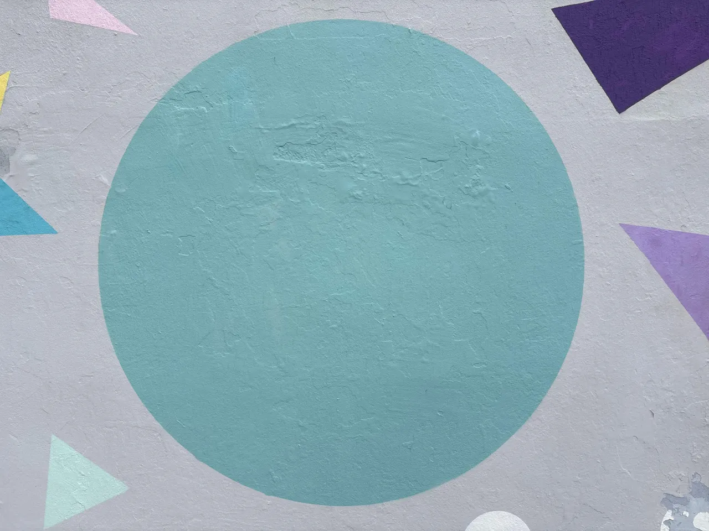

TP MMI · RÉALITÉ AUGMENTÉE
Une image.
Un personnage en 3D.
Dirige la caméra vers cette image pour faire apparaître ton modèle 3D.

Voir l’image à scanner ↗- Affiche cette image sur un autre écran ou imprime-la.
- Démarre le scanner et autorise la caméra.
- Rapproche la photo entière du cadre, cercle et triangles compris.
Sur téléphone, ouvre ce site dans Safari ou Chrome.
Modèle MENS · kwong.x · CC BY 4.0